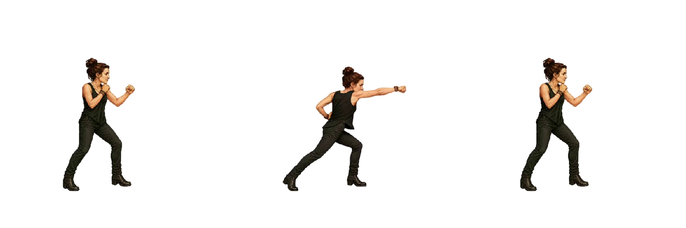
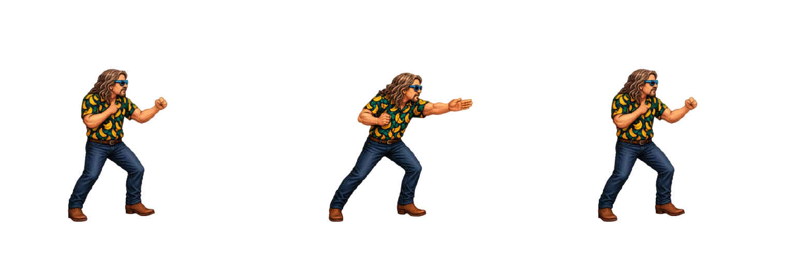
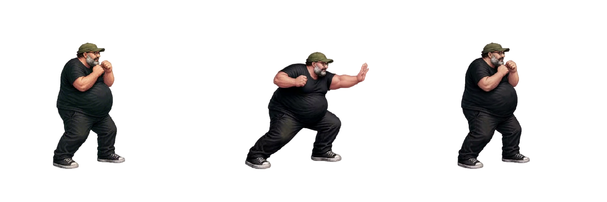
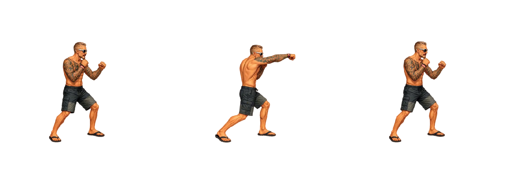
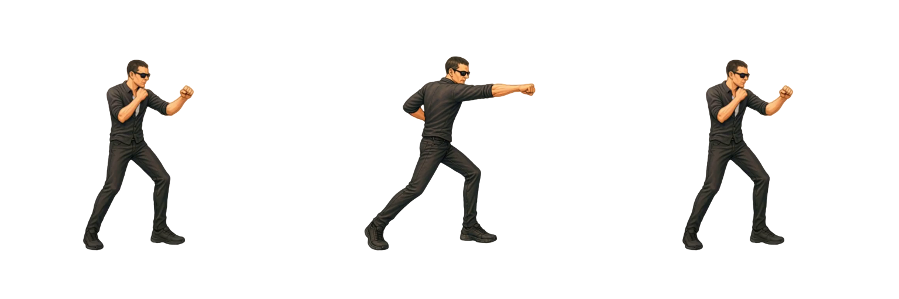
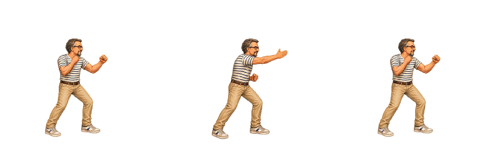
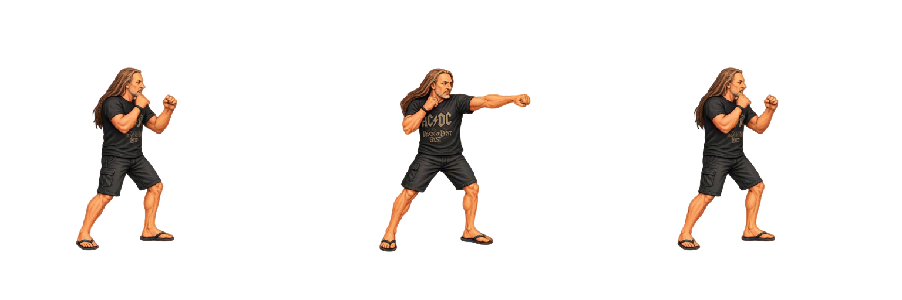

Timing Pugno medio
Tutti i sette personaggi eseguono la sequenza in 750 ms (0,75 s) a velocità 1×. La massima estensione inizia a 450 ms (0,45 s). I frame prima dell’estensione dividono 450 ms; quelli successivi dividono i restanti 300 ms. L’idle finale è una posa terminale a 750 ms e non aggiunge durata. Gli FPS indicati sono la media del ciclo.
Le pose mostrano ingresso, massima estensione e idle finale. Il frame di estensione inizia a 450 ms; la posa finale viene raggiunta esattamente a 750 ms, senza aggiungere una pausa al ciclo. Con Loop si riparte dal primo frame; disattivandolo resta visibile la posa finale. Mangler usa medium_open_hand_slap, composto dai tre spritesheet di preparazione, colpo e ritorno. Gli hash dei PNG originali sono conservati in sourceSheets.
Frame, pixel, proporzioni in centimetri e correzioni Godot sono conservati. “Riproduci tutte” riallinea anche i cicli successivi e i caricamenti progressivi; a 0,5× dura 1,5 s, a 2× dura 0,375 s. I timing Godot originali restano nel manifest.
Per Bue, Mileto, Oscare, Peirò e Torpe viene letto esattamente il campo medium_punch_sheet delle scene Godot, distinto da jump_medium_punch_sheet. Le pose sono quelle del pugno medio a terra.
Scarica CSV · Configurazione timing
| Personaggio | Ingresso / estensione / fine | Frame | Durata | Massima estensione | FPS medi demo | FPS Godot | Note |
|---|---|---|---|---|---|---|---|
| Arianna |  Frame 1 / 21 / 49 | 49 | 750 ms | 450 msFrame 21 (indice 20) | 65.3333 | 48 | Sequenza di andata e recovery inversa Godot concatenate senza duplicare il picco. |
| Bue |  Frame 1 / 23 / 47 | 47 | 750 ms | 450 msFrame 23 (indice 22) | 62.6667 | 48 | Sequenza di andata e recovery inversa Godot concatenate senza duplicare il picco. |
| Mangler |  Frame 1 / 17 / 42 | 42 | 750 ms | 450 msFrame 17 (indice 16) | 56 | 48 | Mangler: preparazione 10 + colpo 16 + ritorno 16; tre PNG originali e atlas derivato, scala 0.85. |
| Mileto |  Frame 1 / 14 / 24 | 24 | 750 ms | 450 msFrame 14 (indice 13) | 32 | 48 | Mileto: ritorno già presente nei 24 frame sorgenti. |
| Oscare |  Frame 1 / 21 / 43 | 43 | 750 ms | 450 msFrame 21 (indice 20) | 57.3333 | 48 | Sequenza di andata e recovery inversa Godot concatenate senza duplicare il picco. |
| Peirò |  Frame 1 / 14 / 29 | 29 | 750 ms | 450 msFrame 14 (indice 13) | 38.6667 | 48 | Sequenza di andata e recovery inversa Godot concatenate senza duplicare il picco. |
| Torpe |  Frame 1 / 11 / 27 | 27 | 750 ms | 450 msFrame 11 (indice 10) | 36 | 30 | Sequenza di andata e recovery inversa Godot concatenate senza duplicare il picco. |